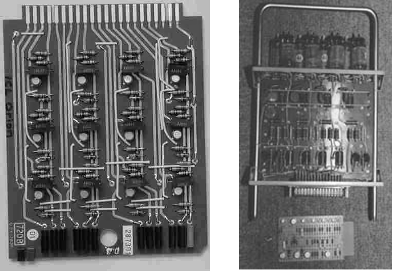

Foi nessa época foi criado o computador IBM 1401, foi o primeiro membro da série IBM 1400, era um computador decimal de longitude de palavra variável, que foi apresentado ao mercado pela empresa IBM em 5 de outubro de 1959, sendo retirado a 8 de fevereiro de 1971. O 1401 podia utilizar-se como um sistema independente, conjuntamente com equipamento IBM de cartões perfurados, ou como equipamento auxiliar de sistemas das séries IBM 700 ou 7000.

Essa época caracterizou-se pela substituição das válvulas por transistores e dos fios de ligação por circuitos impressos; sua programação passou a ser interna, a velocidade de processamento em microssegundos, e sua memória, expandida ate a ordem de 20 megabytes. Isto tornou os computadores mais rápidos, menores e de custo mais baixo. Surgem os primeiros armazenadores externos de informações: fitas magnéticas e discos.